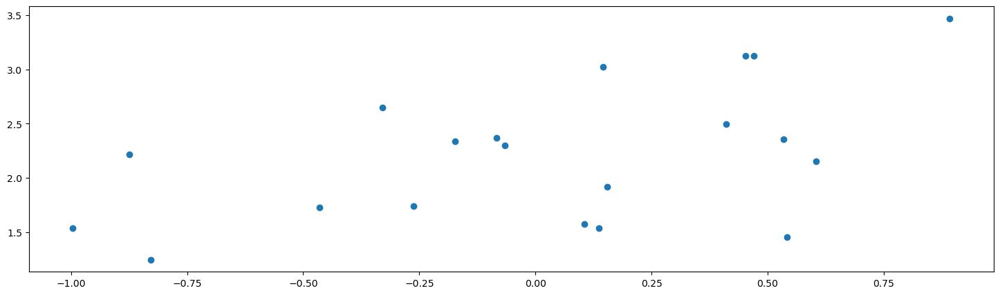

This is the third part in my Intro to Bayesian Optimization
- Optimization Intuitions
- The Bayesian Optimization Framework
- Intro to Bayesian Statistics
- Gaussian Processes
A question you might have at this point is: this seems like a general framework I could implement with any model; what about it is Bayesian?
In this section we’re going to cover the fundamentals of Bayesian Statistics, and why it’s the appropriate choice for the model in the framework described above. We will compare Ordinary Least Squares linear regression with Bayesian linear regression to compare the difference in approaches and to lay the foundation for understanding Gaussian Processes
An intro to Bayesian stats will usually start with poking at problems with our normal approach to statistics.
The philosophical answer
In computing our acquisition function we used , the standard deviation of our model of the function. Really it’s . This implies that our model comes from a distribution. But by construction, the function is fixed. Treating it as random was very useful for us, but what’s our justification for doing this?
Treating functions and parameters as fixed so we can estimate them is called the Frequentist approach. Most statistics you would have done (e.g. linear regression) would have been Frequentist statistics. Treating functions/parameters as coming from probability distributions is the fundamental and differentiating idea in Bayesian statistics.
Frequentist statistics and confidence intervals
You may ask, do we really need to do this? Couldn’t we use a frequentist model and construct confidence intervals in a similar way and use that in our acquisition function?
Well, you could, but this would be a misuse of confidence intervals.
Consider a Frequentist (normal statistics) model like linear regression. We have some data and a model described by some parameters . In model fitting and hypothesis testing, we consider the probability of the data appearing given the choice of parameters.
We call this the likelihood. For this purpose, we always consider the parameters as fixed: there is one true set of parameters and we’re trying to estimate them as best as we can. Our fit is reflective of the best guess, the parameters that maximize the likelihood. There is no distribution for the parameters, so our model isn’t reflective of a distribution itself.
This estimate defines the most likely distribution for the data with the choice of model, there is no distribution for what the parameters or model could be. There’s just one best guess for the objective truth.
We do have a notion of uncertainty of our guess, the confidence interval. While they are measures of uncertainty, a confidence interval is not a probabilistic statement about the location of a parameter or function. they are probabilistic statements about the location of the intervals themselves.
wrong interpretation: there is a 95% probability that the true parameter lies within the 95% confidence interval.
Why? If the parameter is fixed and given an interval, then it’s either in the interval or it’s not. 100% or 0%.
correct interpretation: if we were to theoretically repeat this experiment many times, and given the observed data, 95% of confidence intervals we calculate would contain the true parameter and 5% would not.
This may seem a bit semantic, so let’s use an example.
Constructing a confidence interval: ring toss
Let’s say we’re playing a game with a peg in the ground, and rings that are all of a standard size. We stand behind a line 5m away from the peg and try to get the rings over it.
I’m pretty good at this game, and throwing 1000 rings I am able to get the ring on the peg 950 times. Let’s say I’ve got a 95% probability of success here.
Now you close your eyes, I throw one ring, then I remove the peg, and you open your eyes. You want to guess where the peg was. The region that the ring covers is a 95% confidence interval for the location of the peg.
If you were to say that the peg was located in the ring, then supposing we repeat this experiment many times, 95% of the time you’d be right, and 5% of the time you’d be wrong. But we only get to look at one example. You wouldn’t say there’s a 95% chance the peg was located in the ring, I either got it or I didn’t, so we use “I’m 95% confident the peg was located in the ring”. But we need this idea of hypothetical repeated experiments to say that.
When we are constructing confidence intervals, we are inferring where pegs are from the ring tosses that are our observed data. They provide us with statements that give us an idea about uncertainty in our estimate, but they do not give us probabilities for the location of the parameters.
So we shouldn’t use confidence intervals to measure variance of our estimates, but what about when we do want a probabilistic interpretation of the parameters?
The Bayesian approach
If we want probabilistic statements of our parameters… then they need to have probabilities. Bayesian statistics is at its heart about full probability models. We don’t necessarily make best guesses, we try to describe distributions of outcomes.
Again, consider some data and a model characterized by parameters . We define a full probability model
which implies a range of other marginal and conditional distributions
which we can combine using Bayes’ Rule to get an expression for the distribution of the parameters given the observed data:
However now we’ve got a bit of a paradox. Consider our models above in the implementation of Bayesian Optimization. The true function was fixed because I defined it that way, but now we’re saying it comes from some probability. To resolve this, we switch our perspective. It’s impossible to ascertain the true state of the world, rather we are modelling our own beliefs, and improving those beliefs as we go. Bayesian Statistics has always come with a lot of philosophical baggage for this reason. The Frequentist approach is to say that the truth exists, and if we pick unbiased estimators then as we get more and more data we can ascertain the truth. The Bayesian approach is to say it doesn’t matter whether the truth exists or not, what matters is our own set of beliefs, and how they can best be informed to describe the data we already have. The interpretation we normally use is:
each distribution comes with a technical name:
Note that while everything else can be calculated, we must pick the prior distribution ourselves to start this process. This is why Bayesian statistics is in a sense “subjective”, we get to choose our beliefs going into the problem.
A way to interpret this approach is to think of the prior as the domain that you think the true parameters could possibly live in, the update process as shrinking that domain to the posterior. Careful choice must be made to make sure that the true parameters lie inside the prior domain, but that it is not too large as to not allow for reasonable inference.

Now consider that is actually a function of our explanatory variable . Then we can model functions probabilistically with the posterior , which is exactly what we’re doing above in our optimization plots.
We can construct 95% probability intervals based on the posterior. In the Bayesian framework, we call these credible intervals, and they are probabilistic descriptions for the position of the parameters.
As an aside, a full probability model allows us to calculate many other distributions. For instance, if we have observations , and we want to predict new data , we can fully describe the probability of any model prediction. We call this the posterior predictive distribution
which we can find analytically or through sampling methods.
The practical answer
Frequentist statistics relies heavily on asymptotic theory for results to hold, with measurements of uncertainty based on hypothesized repeated sampling. This means good estimates can require a lot of data. Bayesian statistics can be a much better approach for smaller data sets where we don’t have this reliance, and we are more reliant on describing the data that we already have.
Example: the Linear Regression
We have a model with likelihood
For one explanatory variable, this is simply where
Here’s our data. I have constructed it as , where and are unknown:

The good old fashioned frequentist linear model
To fit this model, we want the best point estimate. These are the values of the model that have a line of best fit:
The green dotted line is the true line that I generated the data points from (with some noise). Red is the line of best fit.
The basic principle of frequentist statistics is that the red line will approach the green line as you collect more and more data. However, with finite samples your fit will always be wrong. You only have a true fit in the limit of collecting data.
The Bayesian linear model
Remember, in Bayesian Statistics we are not trying to find a best fit, we are trying to find a distribution that characterizes the model given the observations of the data. What does this mean?
We have the same model, but this time let’s put a prior distribution on . Lets assume and come from a normal distribution. If we’ve picked both our likelihood and priors to be Gaussian, that means the posterior will be Gaussian, and also have a closed form.
Note: the actual calculations aren’t important here. The point is to describe the Bayesian process
and so we have our distribution for the parameters that we can sample from. (This is a bit of a simplification as we assume a known ). In practice, there is often no analytical form depending on the choice of prior, but we can still utilize various methods (e.g. Markov Chain Monte Carlo methods) to sample, and then approximate the distribution.
But let’s plot some of these samples to see this interpretation.
Sampling the prior
We can start by saying our and parameters come from a joint standard normal distribution.
What would samples from this prior look like?
We can try visualizing the prior by sampling many times
Sampling the posterior
Ok now let’s update our beliefs by calculating the posterior using the formula from above
Here, each line is a sample of the Bayesian model. The parameters are estimated by a posterior distribution, they are not fixed. Note that each line is a function, and each line is given from a pair of parameters sampled from the posterior. A point drawn from the posterior corresponds to one function, so we say the space of parameters is our function space.
We can keep on sampling from the function space and get a visual intuition for the distribution of the mean of the model. This is going to be relevant for us as the mean is a function of the explanatory variable. Note how the distribution is tighter closer to the data points. This reflects how we have more information in this region.
We say that each function here is credible, it’s a believable result given our beliefs and observed data. There’s no “best” one, they each are samples from the distribution, with different probability densities associated with each line. If were to take the inner 95% of values at each point , we would be constructing a 95% credible interval. We use credible interval instead of confidence interval to refer to the fact that the region does represent a probability of the function/parameter.
Section 3 Recap
In this section, we justified the use of a Bayesian model which gives its name to Bayesian Optimization: we’re assuming the function comes from a probability distribution as opposed to being fixed, which allows us to reason about the acquisition function probabilistically with a notion of decreasing the variance of our belief in the function. We’ve also justified it with the tendency for Bayesian statistics to be a good choice when you have less data, as Frequentist models rely on asymptotic theory i.e. a lot of data to converge.
We used the example of Linear Regression to compare the Frequentist and Bayesian approaches. In the Bayesian approach, we make an assumption about the distribution of the parameters (the prior), then update our beliefs (the posterior) in the presence of the data (the likelihood). The result is a probability distribution that represents our new belief state about the function describing the model.
However, in Bayesian Optimization, we don’t assume to have a linear model. We don’t know anything about the shape of the function, it’s a black box. So we will need to find a Bayesian model that can describe arbitrary functions, not just linear ones.
This is the motivation behind Gaussian Processes, which we will look at in the next section.